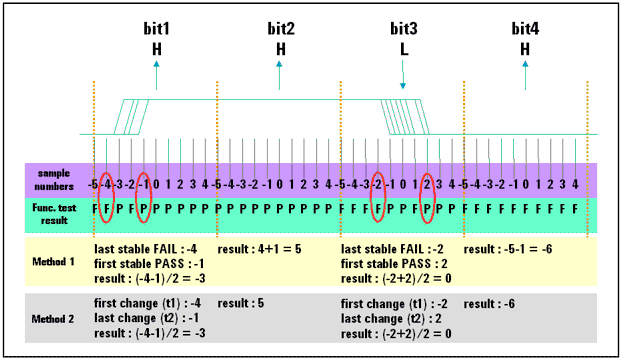

BIT_TRANSITION
The BIT_TRANSITION class can be used for a source synchronous bus. This API measures the transition delay on each pin and each bit. You can use it to calculate parameters like setup/hold times between pins on a per-bit or per-transition basis. The API supports multi-site parallel test.
To determine when a data transition occurs, a search method is used. This search is linear. The detail of search is performed as follows:
Functional tests are performed for each sampling point in the area between BIT_TRANSITION::sampleStart and BIT_TRANSITION::sampleStop. After each functional test, the test results are analyzed. This analysis compares the functional test results of the previous test execution with the functional test results of the current test execution bit by bit. If the test results of the two executions differ, the following actions are performed:
- If this is the first test difference that occurs for this bit, the sample offset number of the previous test execution is stored in a variable (t1) and the sample offset number of the current test execution is stored in a variable (t2).
- If this is not the first test difference for this bit, the sample offset number of the current test execution is stored in a variable (t2).
If no difference is found for any functional test result pair per bit:
- Both variables will be set to (sampleStart-1) if the test result for this bit was FAIL for all functional test executions.
- Both variables will be set to (sampleStop+1) if the test result for this bit was PASS for all functional test executions.
The sample offset value is calculated as (t1 + t2) / 2, rounding to an integer number.
The principle of this test method is illustrated in the figure below.

This API is defined in the header file /opt/hp93000/soc/prod_com/include/MAPI/BitTransition.h.
Class definition
Constructor
BIT_TRANSITION(const STRING& pinlist)
Member functions
They are listed in alphabetical order.
BIT_TRANSITION& bitStart(INT bit) BIT_TRANSITION& bitStop(INT bit) void execute() INT getBitStart() const INT getBitStop() const const ARRAY_I& getResult(const STRING& pin) const INT getSamplesPerCycle() const INT getSampleStart() const INT getSampleStop() const DOUBLE getTimingResolution() const BIT_TRANSITION& samplesPerBit(INT samples) BIT_TRANSITION& sampleStart(INT sample_offset) BIT_TRANSITION& sampleStop(INT smaple_offset) BIT_TRANSITION& timingResolution(DOUBLE time_resolution)
Constructor
BIT_TRANSITION(const STRING& pinlist)
This constructor creates an object class that searches the pass/fail transition in 1 UI (Unit Interval).
Parameter
pinlist |
The pins or pin groups to which the transition analysis is applied. |
Member functions
The member function are described in alphabetical order.
bitStart()
BIT_TRANSITION& bitStart(INT bit)
This function specifies the bit number where data retrieval starts. "bit" means the sub-cycle in a tester cycle (1 cycle/x-mode), for example in x-8 mode, there are 8 bits in a tester cycle.
bit |
The bit number where data retrieval starts. The default value is 0. |
bitStop()
BIT_TRANSITION& bitStop(INT bit)
This function specifies the bit number where data retrieval stops.
bit |
The bit number where data retrieval stops. The default value is the last bit. |
execute()
void execute()
This function executes the functional test for each sampling point, uploads the data from hardware and then calculates the offset value (t1+t2)/2 of each bit for later BIT_TRANSITION::getResult() calls.
getBitStart()
INT getBitStart() const
This function returns the bit number where data retrieval starts.
getBitStop()
INT getBitStop() const
This function returns the bit number where data retrieval stops.
getResult()
const ARRAY_I& getResult(const STRING& pin) const
This function returns the analysis result data for the error map information per bit retrieved in a previous execution of the function execute() as ARRAY_I for the specified pin. Possible values as elements of ARRAY_I are samples from start to stop.
pin |
The pin to retrieve the result. |
getSamplePerCycle()
INT getSamplesPerCycle() const
This function returns the sampling point for data retrieval in 1 UI.
getSampleStart()
INT getSampleStart() const
This function returns the sampling point offset to start data retrieval in 1 UI.
getSampleStop()
INT getSampleStop() const
This function returns the sampling point offset to finish data retrieval in 1 UI.
getTimingResolution()
DOUBLE getTimingResolution() const
This function returns the timing resolution for data retrieval in seconds.
samplePerBit()
BIT_TRANSITION& samplesPerBit(INT samples)
This function specifies the number of sampling points for data retrieval in 1 UI. You can specify the timing resolution or number of sampling points per bit. If timing resolution is specified afterwards, number of sampling points per bit is overriden.
samples |
The number of sampling points for data retrieval in 1 UI. The default value is 1. |
sampleStart()
BIT_TRANSITION& sampleStart(INT sample_offset)
This function specifies the sampling point offset to start data retrieval in 1 UI (Unit Interval = 1 Bit time).
offset |
The sampling point offset to start the data retrieval. The default value is 0, which means the current position specified by the timing setup. |
sampleStop()
BIT_TRANSITION& sampleStop(INT smaple_offset)
This function specifies the sampling point offset to stop data retrieval in 1 UI (Unit Interval = 1 Bit time) by sample.
offset |
The sampling point offset to stop the data retrieval. The default value is 0, which means the current position specified by the timing setup. |
timingResolution()
BIT_TRANSITION& timingResolution(DOUBLE time_resolution)
This function specifies the timing resolution for data retrieval. You can specify the timing resolution or number of sampling points per bit. If number of sampling points per bit is specified afterwards, timing resolution is overriden.
time_resolution |
The timing resolution for data retrieval in seconds. The default value is 1 UI. |
Examples
Set bit transition range
BIT_TRANSITION(pin).bitStart(1); BIT_TRANSITION(pin).bitStop(1023);
This example sets the bit number where data retrieval starts to 1 and the bit number where data retrieving stops to 1023.
Set the sampling point offset
BIT_TRANSITION(pin).sampleStart(8); BIT_TRANSITION(pin).sampleStop(31);
This example sets the sampling point offset to start data retrieval in 1 UI to 8 and the sampling point offset to stop data retrieval in 1UI to 31.
Set time resolution
BIT_TRANSITION(pin).timingResolution(20 ps);
This example sets the time resolution for data retrieval to 20 ps.
Set the sampling points per bit
BIT_TRANSITION(pin).samplesPerBit(100);
This example sets the number of sampling points per bit for data retrieval to 100.
Execute the bit transition and retrieve the settings
BIT_TRANSITION(pin).execute(); INT bitstart = BIT_TRANSITION(pin).getBitStart(); INT bitstop = BIT_TRANSITION(pin).getBitStop(); INT samplestart = BIT_TRANSITION(pin).getSampleStart(); INT samplestop = BIT_TRANSITION(pin).getSampleStop(); INT samples = BIT_TRANSITION(pin).getSamplesPerBit(); DOUBLE timingres = BIT_TRANSITION(pin).getTimingResolution(); ARRAY_I result = BIT_TRANSITION(pin).getResult(pin);
The first line executes functional test for each sampling point and uploads data from the hardware. The following six lines return:
- the bit number where data retrieval starts and stops,
- the sampling offset to start and stop data retrieval in 1 UI,
- and the number of sampling points and time resolution for data retrieval.
The last line returns the analysis result data for the error map information per bit retrieved in previous execution of the function execute().